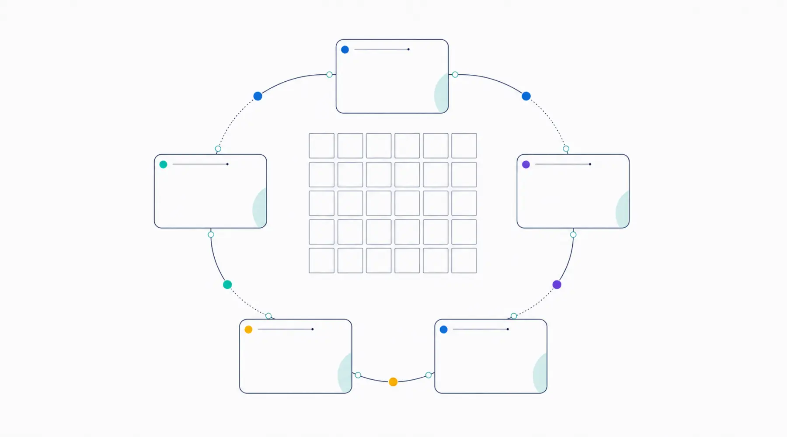
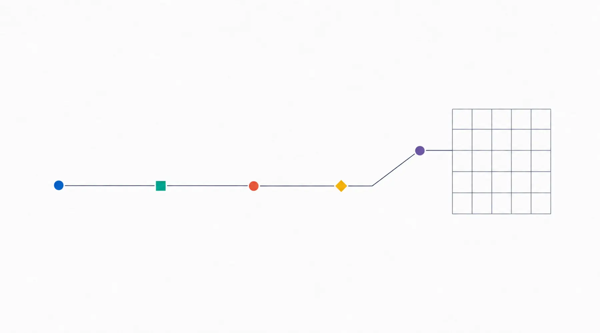

公開・管理プラン
公開して、
終わりにしません。
表示できているか、SSLに問題がないか、連絡先が古くなっていないか。公開後に必要な確認を、必要な範囲でお引き受けします。管理が不要な場合は制作のみでも構いません。
- 6か月プラン
- 34,000円
- 12か月プラン
- 50,000円
- 24か月プラン
- 90,000円
初回。更新は30,000円
一括前払い
一括前払い
6か月プラン
34,000円
初回はドメイン取得・初期設定代行費4,000円を含みます。更新は30,000円です。
12か月プラン
50,000円
初回・更新とも50,000円です。
24か月プラン
90,000円
初回・更新とも90,000円です。
どのプランでも対応内容は同じです。違いは契約期間と金額だけです。
毎月、この順番で確認します。
決まった順路で見るので、見落としが起きにくくなります。

含む内容 / 含まない内容
- サーバー管理、公開状態チェック、自動稼働確認
- ドメイン・SSLまわりの確認
- 月1回までの軽微なテキスト修正
- 障害時の一次確認
- ページ追加、レイアウト・デザイン変更、新規文章作成
- 新機能の追加、外部サービス側の有料費用、大幅な画像加工
軽微な修正の例: 文章の一部変更、電話番号・営業時間・リンクの差し替え、画像1〜2点の差し替え（翌月への繰越なし）。

計測設定
数字を見る土台だけ、先に作ります。
おまかせプランでは、GA4・Search Console・主要クリックの計測設定を支援します。その他のプランでは、基本タグを入れられる構造まで整えます。
計測サービスの実接続は、公開作業時にお客様のアカウントで行います。今回のサイトでは未接続です。
更新とお支払い
自動更新はしません。満了の前にご案内します。
- 満了月の1日 更新のご案内 更新のご案内と請求書をお送りします。契約期間中は通常どおり管理します。
- 満了日まで お支払いで更新 満了日が支払期限です。入金を確認できれば、同じ期間で更新します。
- 入金がない場合 満了日で終了 サーバーでの公開を含む管理は、（公開前に確定: 満了後の扱い）。
満了日の14日前・7日前・3日前を目安に、確認のご連絡もお送りする予定です。開始日から月末まで15日以上ある場合はその月を1か月目とし、14日以下の場合は月末までを無償期間として翌月1日から数えます。契約期間の途中で解約された場合の返金は、法令上必要な場合や当方の責めに帰すべき事由がある場合を除き、原則ありません。
本プランは100%の稼働や一定時間内の復旧を保証するSLAではありません。障害時はまず原因を確認し、復旧作業が管理範囲を超える場合は、作業前に費用と対応方法をご案内します。
サーバーはクルーアセント側の契約で管理する方針です。各プランには.comドメイン1件の取得・更新費が含まれます。ドメインの登録名義はお客様で、取得・更新・DNS設定をクルーアセントが代行します。契約期間中にドメイン会社の料金が上がっても期間中は据え置き、次の更新で変わる場合は事前にお知らせします。ご希望のドメイン名が取れない場合はご相談します。
用語の説明
このページで使う言葉
料金表や説明に出てくる言葉を、短く説明します。分からない言葉があれば、相談のときにそのまま聞いてください。
- 買い切り
- 制作費を一度だけお支払いいただく形です。毎月の制作費はかかりません。公開後の管理は、必要な方だけ別に選べます。
- ドメイン
- 「example.com」のような、Webサイトの住所にあたる名前です。取得と更新に、年ごとの費用がかかります。
- サーバー
- Webサイトのファイルを置いて、インターネットに公開しておく場所です。
- SSL（https）
- 通信を暗号化して、アドレスを「https://」で始まる状態にする仕組みです。
- アクセス解析（GA4など）
- 何人が見たか、どのページが読まれたかを数える仕組みです。GA4はGoogleの無料ツールです。
- 商用利用できる素材
- 事業のWebサイトに使ってよいと、利用条件で認められている写真やイラストです。